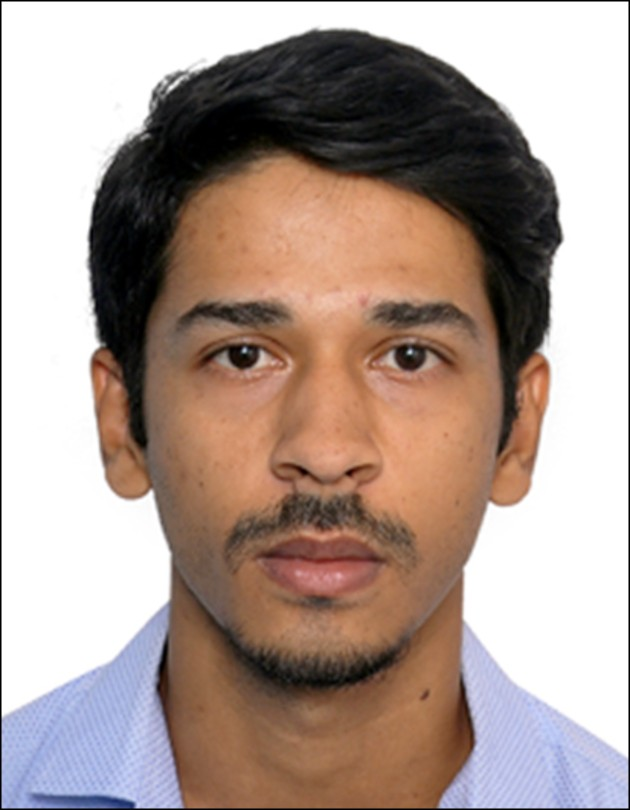
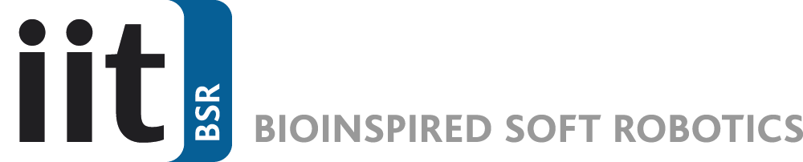

CV | Google Scholar | ORCID | LinkedIn

A postdoctoral researcher with expertise in developing biomimetic, responsive soft materials for biomedical, environmental, and soft-robotics applications. Skilled in interdisciplinary collaboration, advanced material characterization, and translational research. Dedicated to advancing technologies at the interface of adaptive robotics and biomedical science.
pH-responsive and solvent-adaptive hydrogels for targeted drug delivery.
Engineering dynamic biomaterials for medical applications including anti-fouling and vascular graft systems.
Nature-inspired actuation systems for biointegrated devices and soft robotics.
Developing multifunctional materials using 3D and 4D printing techniques.
IEEE RAS ROBOSOFT 2026, Kanazawa, Japan – Functional and Untethered Soft Machines